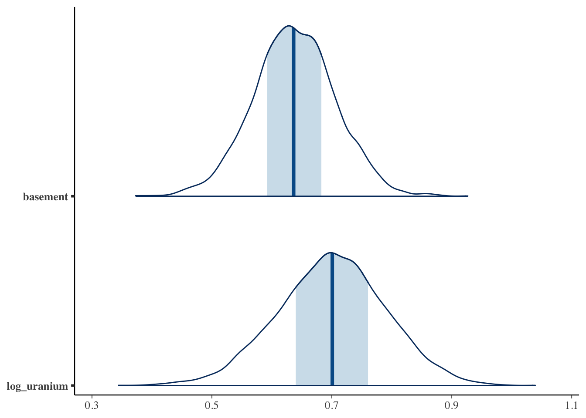

library(ggplot2)
library(tidyr)
library(dplyr)
library(bayesplot)
library(rstanarm)
library(purrr)
library(tidybayes)9 Multi-level modeling
9.1 Modeling household-level variation in radon exposure
In this tutorial, we are going to replicate the analysis of household-level variation in radon exposure originally presented in (gelman2006?) (which is actually a tutorial version of (price1996?)). Our goal is to run the models described in the paper using regression models from base R as well as a Bayesian hierarchical model from the rstanarm package. Finally, we will reproduce Figures 1 & 2 from the original paper using ggplot2:
Preparation
Set up the workspace
First, we will load the relevant packages:
Data Preparation
First, lets take the raw radon dataset from the rstanarm package and recode the floor variable to be interpretable as the basement one from the original paper: some minor modifications and additonal datasets that we’ll use for the purposes of modeling and visualizing these data.
radon$basement <- 1 - radon$floorNow we can see that that the dataset has all of the variables we need:
floor county log_radon log_uranium basement
1 1 AITKIN 0.83290912 -0.6890476 0
2 0 AITKIN 0.83290912 -0.6890476 1
3 0 AITKIN 1.09861229 -0.6890476 1
4 0 AITKIN 0.09531018 -0.6890476 1
5 0 ANOKA 1.16315081 -0.8473129 1
6 0 ANOKA 0.95551145 -0.8473129 1Models
üö™ Door 1: Full pooling!
This corresponds to a model in which we are assuming exactly no variation across locations in terms of the baseline level of radon. So, we can run a simple regression model where we assume that:
\[ y_{ij} = \alpha + \beta x_{ij} + \epsilon_{i} \]
Where \(x_{ij} = 1\) if a house has a basement and 0 otherwise.
In R, we can fit this model via least squares using a single line of code:
m1 <- lm(log_radon ~ basement, data = radon)We can call the summary function to get a description of the key coefficients and the goodness-of-fit:
lm(formula = log_radon ~ basement, data = radon)
coef.est coef.se
(Intercept) 0.78 0.06
basement 0.59 0.07
---
n = 919, k = 2
residual sd = 0.79, R-Squared = 0.07üö™ Door 2: No pooling
The second approach is the “No Pooling” one in which we allow the baseline intensity of radon in each county (represented by the intercept term \(\alpha_j\)) to vary, but we don’t do anything to constrain that variation. In other words, we treat each county as though it was independent.
However, to estimate a consistent effect of having a basement across all counties, we estimate a single \(\beta\) term. This leads to a model that looks like this:
\[ y_{ij} = \alpha_j + \beta x_{ij} + \epsilon_{i} \]
In R this is easy to implement, because we are implicitly asking the regression model to treat county as a categorical variable if we pass it to it as a factor datatype:
no_pool_m <- lm(log_radon ~ basement + log_uranium + county, data = radon)lm(formula = log_radon ~ basement + log_uranium + county, data = radon)
coef.est coef.se
(Intercept) 0.42 0.37
basement 0.69 0.07
log_uranium 0.32 0.60
countyANOKA 0.09 0.44
countyBECKER 0.48 0.53
countyBELTRAMI 0.67 0.43
countyBENTON 0.39 0.48
countyBIGSTONE 0.31 0.68
countyBLUEEARTH 0.83 0.51
countyBROWN 0.80 0.60
countyCARLTON 0.05 0.38
countyCARVER 0.43 0.50
countyCASS 0.52 0.47
countyCHIPPEWA 0.56 0.60
countyCHISAGO 0.21 0.48
countyCLAY 0.79 0.54
countyCLEARWATER 0.28 0.50
countyCOOK -0.23 0.60
countyCOTTONWOOD 0.06 0.63
countyCROWWING 0.26 0.40
countyDAKOTA 0.27 0.36
countyDODGE 0.63 0.63
countyDOUGLAS 0.60 0.49
countyFARIBAULT -0.42 0.57
countyFILLMORE 0.18 0.75
countyFREEBORN 0.94 0.51
countyGOODHUE 0.80 0.48
countyHENNEPIN 0.32 0.34
countyHOUSTON 0.52 0.66
countyHUBBARD 0.30 0.44
countyISANTI 0.22 0.57
countyITASCA 0.07 0.42
countyJACKSON 0.83 0.59
countyKANABEC 0.18 0.50
countyKANDIYOHI 0.94 0.54
countyKITTSON 0.51 0.55
countyKOOCHICHING 0.04 0.52
countyLACQUIPARLE 1.75 0.71
countyLAKE -0.40 0.44
countyLAKEOFTHEWOODS 0.99 0.51
countyLESUEUR 0.60 0.55
countyLINCOLN 1.08 0.67
countyLYON 0.75 0.59
countyMAHNOMEN 0.23 0.84
countyMARSHALL 0.53 0.44
countyMARTIN -0.05 0.51
countyMCLEOD 0.17 0.46
countyMEEKER 0.13 0.49
countyMILLELACS -0.07 0.60
countyMORRISON 0.11 0.41
countyMOWER 0.54 0.51
countyMURRAY 1.27 0.90
countyNICOLLET 0.99 0.59
countyNOBLES 0.71 0.68
countyNORMAN 0.10 0.63
countyOLMSTED 0.16 0.48
countyOTTERTAIL 0.60 0.40
countyPENNINGTON 0.11 0.54
countyPINE -0.24 0.43
countyPIPESTONE 0.62 0.68
countyPOLK 0.55 0.60
countyPOPE 0.11 0.70
countyRAMSEY 0.22 0.33
countyREDWOOD 0.78 0.61
countyRENVILLE 0.46 0.67
countyRICE 0.70 0.49
countyROCK 0.06 0.79
countyROSEAU 0.64 0.36
countySCOTT 0.70 0.43
countySHERBURNE 0.24 0.44
countySIBLEY 0.10 0.58
countySTLOUIS -0.03 0.31
countySTEARNS 0.38 0.43
countySTEELE 0.41 0.53
countySTEVENS 0.56 0.77
countySWIFT -0.18 0.61
countyTODD 0.65 0.54
countyTRAVERSE 0.76 0.69
countyWABASHA 0.69 0.50
countyWADENA 0.43 0.48
countyWASECA -0.47 0.58
countyWASHINGTON 0.31 0.34
countyWATONWAN 1.54 0.60
countyWILKIN 1.06 0.86
countyWINONA 0.41 0.60
countyWRIGHT 0.59 0.39
---
n = 919, k = 86
residual sd = 0.73, R-Squared = 0.29üö™ Door 3: Partial Pooling
Finally, we get to the partial pooling, hierarchical model in which we introduce a hierarchical prior to the model to allow our model to shrink observations from places with few observations towards the population mean. This allows us to avoid the pitfalls of overfitting associated with the no-pooling approach while not making the homogeneity assumptions associated with the full-pooling approach.
This works out to a multi-level model that allows random variation in household-level radon measurements as well as variation at the county level in radon levels above or below the amount predicted by the county-level soil uranium measure. Much like the no-pooling model, we can write outcomes for individuals as:
\[ y_{ij} = \alpha_j + \beta x_{ij} + \epsilon_{i} \]
However, rather than stopping there, we introduce a second level of random variation to the county-level intercepts, \(\alpha_j\).
\[ \alpha_j = \gamma_0 + \gamma \zeta_{j} + \epsilon_{j} \]
Where \(\epsilon_i \sim N(0, \sigma_i)\) and \(\epsilon_j \sim N(0, \sigma_j)\).
To fit this model, we’ll use the rstanarm package, which uses the Stan Bayesian modeling language under the hook to fit the model. This model introduces another piece of syntax to our equation, which now reads log_radon ~ basement + log_uranium + (1 | county). The interesting part of this is the (1 | county) which is a syntax used by rstanarm and other hierarchical modeling packages (such as lme4) to specify random intercepts (typically represented by a 1 in the matrix of regressors) for each of a set of clusters, in this case counties. In this model, the county-level intercept terms are implicitly assumed to be normally distributed with unknown variance \(\sigma_j\) which will be estimated when the model is fit.
We use the stan_lmer function to fit a hierarchical linear model with a normally-distributed response variable, as follows:
m2 <- stan_lmer(log_radon ~ basement + log_uranium + (1 | county), data = radon)Because this model is fit by MCMC, we can use draws from the posterior distribution to understand uncertainty in the model. For example, this visualization of the median prediction and credible intervals for the basement and uranium effects can be visualized using the mcmc_areas function from the bayesplot package:
posterior <- as.matrix(m2)
g2 <- mcmc_areas(posterior, pars = c("basement", "log_uranium"))
plot(g2)
Making the Figures
Figure 1
Data Preparation
Since each row of radon dataset includes an observation of a single house, we need to work backwards to obtain the county-level soil uranium measure for each individual county. This is pretty straightforward to do using the dplyr package:
county_uranium <- radon %>%
group_by(county) %>%
summarize(log_uranium = first(log_uranium))We will also make a second dataset that we will use for storing the predicted radon levels for households with and without basements each for county. This contains 2 entries for each county, representing observations taken in the basement or on the first floor.
county_uranium_tmp_1 <- county_uranium
county_uranium_tmp_1$basement <- 1
county_uranium_tmp_2 <- county_uranium
county_uranium_tmp_2$basement <- 0
county_dummy_df <- rbind(county_uranium_tmp_1, county_uranium_tmp_2)Now, we will take each of our fitted models (fully pooled, unpooled and partially pooled) and put their predicted values into our plotting dataset
county_dummy_df$pooled_pred <- predict(m1, county_dummy_df)
county_dummy_df$no_pool_pred <- predict(no_pool_m, county_dummy_df)Because the partial pooling model was fit using MCMC, we will take a slightly different approach and use the median of the posterior predictive distribution for each observation, which is analogous to (but not exactly the same as) the OLS predictions from the other models:
## Gives posterior median for each prediction.
county_dummy_df$partial_pred <- posterior_predict(m2, county_dummy_df) %>%
apply(2, median)Plotting
To re-create Figure 1, we will subset out the observed data and predictions for the 8 counties included in the original figure:
## Place the county names in a vector we will use to keep track of them
fig_1_counties <-
c(
"LACQUIPARLE",
"AITKIN",
"KOOCHICHING",
"DOUGLAS",
"CLAY",
"STEARNS",
"RAMSEY",
"STLOUIS"
)
# First, using the `county_dummy_df` with the basement/non-basement predictions in it,
# subset out the relevant counties and make a new county factor variable which
# will be used to ensure that the counties in Fig. 1 plot in the right order
county_df_fig_1 <- county_dummy_df %>%
filter(county %in% fig_1_counties) %>%
mutate(county2 = factor(county, levels = fig_1_counties)) %>%
arrange(county)
## Now select out the households in the original data that
## are in each county and create another county-level factor
## variable in the same order
pred_counties <- radon %>%
filter(county %in% fig_1_counties) %>%
mutate(county2 = factor(county, levels = fig_1_counties))Once we have the datasets together for the figure, we can begin constructing it using ggplot2:
g <- ggplot() +
## The geom_jitter geom plots the log_radon values for each household and
## jitters the points slightly to avoid overplotting.
geom_jitter(
data = pred_counties,
aes(x = basement, y = log_radon, group = county2),
height = 0,
width = 0.1
) +
## This superimposes the partial-pooling (α + β x_i + ϵ_i +ϵ_j) predictions
## over the raw data
geom_line(
data = county_df_fig_1,
aes(x = basement, y = partial_pred, group = county2),
linetype = "solid",
colour = "gray"
) +
## No-pooling predictions (α_{ij} + β x_i + ϵ_i)
geom_line(
data = county_df_fig_1,
aes(x = basement, y = no_pool_pred, group = county2)
) +
## Full pooling predicitons (α + β x_i + ϵ_i)
geom_line(
data = county_df_fig_1,
aes(x = basement, y = pooled_pred, group = county2),
linetype = "dashed"
) +
## Finally, use facet_wrap to arrange the panels in two
## rows of four
facet_wrap(vars(county2), nrow = 2) +
xlab("basement") +
ylab("log radon level") +
theme_bw() +
theme(
panel.grid.major = element_blank(),
panel.grid.minor = element_blank()
)
plot(g)Figure 2
Figure 2 reproduces the relationship between the county-level random intercepts, \(\alpha_j\) and the expected level of radon at a county level as a function of county-level soil uranium.
Data Preparation
The following code allows us to extract predictions at the county level using our prediction dataset. To do this, we use the predicted_draws function from the tidybayes package, which lets us sample from the posterior distribution of the fitted model. The median_qi function, also from tidybayes, lets us calculate the width of a 1 standard error interval (equivalent to the range containing ~17% of the posterior probability mass around the posterior median) used in the original Figure 1 from (gelman2006?):
dd <- predicted_draws(m2, county_dummy_df) %>%
median_qi(.width = 0.17) %>%
filter(basement == 0)In order to calculate the predicted mean radon at a county level, we need to access the coefficients corresponding to the level two model, including the intercept \(\gamma_0\) and the effect of a 1-log change in log-uranium on predicted log-radon, \(\gamma_1\). In order to get these values out of the model, we can use the gather_draws function from tidybayes, which allows us to access the posterior distributions for each of these parameters:
uranium_coefs <-
gather_draws(m2, c(`(Intercept)`, log_uranium)) %>% median_qi()Now it is as simple as calculating the linear predictor \(\gamma_0 + \gamma_1 z_j\), where \(z_j\) is the log-uranium measure for the j-th county, and storing this information in a data frame we will use for plotting:
log_uranium_range <-
seq(min(county_uranium$log_uranium) - .1,
max(county_uranium$log_uranium) + .1,
by = 0.1
)
pred_log_radon <-
uranium_coefs$.value[1] + uranium_coefs$.value[2] * log_uranium_range
median_radon_pred <-
data.frame(log_uranium = log_uranium_range, .prediction = pred_log_radon)Plotting
Now, we can build this figure up one step at a time, starting with our mean predictions:
g <- ggplot(dd) +
geom_line(data = median_radon_pred, aes(x = log_uranium, y = .prediction))
plot(g)The next step is to then add the median predictions (points) and 1 SE errorbars to the plot, and then fix the theme to match the original figure, et voilà!
g <- g + geom_point(aes(x = log_uranium, y = .prediction, group = county)) +
geom_errorbar(aes(
x = log_uranium,
y = .prediction,
ymin = .lower,
ymax = .upper
)) +
theme_bw() + theme(
panel.grid.major = element_blank(),
panel.grid.minor = element_blank()
) +
xlab("county-level uranium measure") +
ylab("regression intercept")
plot(g)9.2 Taking a spatial perspective on the radon data
This tutorial is a follow-up to a prior exercise using these data. So if you haven’t already, please go back and take a look at the original multi-level modeling radon example in Section 9.1.
Learning Goals
The primary goals of this tutorial are to introduce you to:
- Merging of non-spatial health exposure or outcome data with spatial metadata.
- Calculation of important spatial summary statistics, e.g. Moran’s I, from such data.
- Spatial analysis of residuals from aspatial regression models of spatially-referenced data.
Look out üëÄ for stretch exercises!
If you see a box with a üí° like this, it‚Äôs in an invitation to go a bit further. This could be a conceptual question or a chance to write a bit of code to explore the data or outputs of the analysis a bit more.
Setting up the environment
Code
library(ggplot2)
library(arm)
library(tidycensus)
library(dplyr)
library(rstanarm)
library(stringr)
library(spdep)
knitr::opts_chunk$set(message = FALSE, warning = FALSE, tidy = TRUE)Data Preparation
Before diving into the analysis steps, there are several key things we need to do to be able to easily work with these data.
Download a shapefile for Minnesota
First, we need to download a shapefile for the state of Minnesota in which each polygon represents an individual county. Thankfully, in R, this is made easy using the excellent tidycensus package:
options(tigris_use_cache = TRUE)
minnesota <- get_acs(
state = "MN",
geography = "county",
variables = "B19013_001",
geometry = TRUE,
year = 2020
)Tidycensus gives us the data as an sf dataframe containing a number of fields including population estimates, which we can plot straightforwardly using the plot function supplied by the sf package:
plot(minnesota["estimate"])Merge the spatial data with the radon data
In its raw form, this spatial dataset isn’t quite ready to merge with the radon data. If we take a peek at the county names in the shapefile, we can see that they don’t quite match the formatting of the ones in the original data:
head(sort(minnesota$NAME))[1] "Aitkin County, Minnesota" "Anoka County, Minnesota"
[3] "Becker County, Minnesota" "Beltrami County, Minnesota"
[5] "Benton County, Minnesota" "Big Stone County, Minnesota"Whereas in the radon data we see:
head(unique(as.character(radon$county)))[1] "AITKIN" "ANOKA" "BECKER" "BELTRAMI" "BENTON" "BIGSTONE"The big differences here are that the shapefile uses: 1) mixed-case county names and 2) includes the name of the state in each label. To make these match the radon dataset, we can use some tools from the stringr package as well as some base R functions:
minnesota <-
minnesota %>% mutate(
## Since all of the original county names have the same substring " County, Minnesota"
## we can use the str_remove function to pull them out of all of them
county = str_remove(NAME, " County, Minnesota") %>%
## Since some of the counties officially have two-word names (e.g. Big Stone)
## which are collapsed in the radon dataset, we will use this function to remove all spaces:
str_replace_all(" ", "") %>%
## A few county names include abbreviations indicated by the presence of a '.' (e.g. St. Louis)
## so we will get rid of that bit of punctuation since it is not in the original data
str_replace_all("\\.", "") %>%
## Finally, convert all the county names to uppercase
toupper()
)Now, the county labels should match:
head(sort(minnesota$county))[1] "AITKIN" "ANOKA" "BECKER" "BELTRAMI" "BENTON" "BIGSTONE"Preparing the radon dataset
We will repeat the steps from the earlier tutorial in order to prepare our data for analysis:
radon <- radon %>% mutate(basement = 1 - floor)
county_uranium <- radon %>%
group_by(county) %>%
summarize(
log_uranium = first(log_uranium),
mean_radon = mean(log_radon)
)Because the sf dataset returned by tidycensus is a dataframe, we can then easily merge the county-level soil uranium concentrations we derived above into the shapefile. We use the left_join function from dplyr to ensure that all of the counties in the original shapefile are represented in the final dataset, even if a soil uranium measure is unavailable for them in the original data:
minnesota_radon <- left_join(minnesota, county_uranium)Joining with `by = join_by(county)`We can then plot the log-uranium measures on the map and see that, in fact, they are quite spatially correlated. We can also see that there appear to be two counties which are missing soil uranium data in the radon dataset. To have a bit more control over our plots, we’ll switch here to using the geom_sf function of ggplot2, which makes plotting geographies from sf objects easy:
g <- ggplot(minnesota_radon) +
geom_sf(aes(fill = log_uranium)) +
scale_fill_viridis_c() +
ggtitle("Soil uranium by MN county")
plot(g)Measuring Spatial Correlation
To validate our hunch that soil uranium is spatially concentrated in Minnesota, we can calculate the value of Moran’s I for these data using some functions from the spdep package. First, we use the poly2nb function to obtain the neighbors for each polygon, which will be used to calculate Moran’s I.
nb <- poly2nb(minnesota_radon)This function yields an R list in which each entry is a vector with the indices for the neighbors of the i-th county. For example, this prints the neighbors of the first three counties in the dataset:
Code
print(nb[1:3])[[1]]
[1] 31 47 61 86
[[2]]
[1] 55 72 75
[[3]]
[1] 5 14 26 37 38 65We then pass this function to the nb2listw function to obtain weights for the relationships between neighbors. Here, we use the simplest option available, “B”, for binary weights equal to 1 if the areas are neighbors and 0 otherwise:
lw <- nb2listw(nb, style = "B", zero.policy = TRUE)
print(lw$weights[1:3])[[1]]
[1] 1 1 1 1
[[2]]
[1] 1 1 1
[[3]]
[1] 1 1 1 1 1 1Finally, we can pass these weights, along with some additional information including the outcome of interest at each location, the total number of locations, and the sum of all the weights to the moran function. The NAOK=TRUE option used here also allows the function to drop locations where data are missing:
radon_i <- moran(minnesota_radon$log_uranium, lw, length(nb), Szero(lw), NAOK = TRUE)$IWarning in lag.listw(listw, z, zero.policy = zero.policy, NAOK = NAOK): NAs in
lagged valuesWhen we do this, we find that the value of Moran’s I = 0.71, which is close to the maximum value of 1. Since we’ll be returning to the calculation of Moran’s I using our spatial data, lets pack it up into a function:
moranFromSF <- function(x, sfdf, style = "B") {
nb <- poly2nb(sfdf)
lw <- nb2listw(nb, style = style, zero.policy = TRUE)
mi <- moran(x, lw, length(nb), Szero(lw), NAOK = TRUE)$I
return(mi)
}
print(moranFromSF(minnesota_radon$log_uranium, minnesota_radon))[1] 0.712615Of course, our key quantity of interest isn’t soil uranium but the concentration of radon at the household level. When we constructed the county_uranium dataset above, we also calculated the median radon concentration in the data for each county. When we plot it, we see something similar to the soil uranium, but perhaps a bit less clear:
g <- ggplot(minnesota_radon) +
geom_sf(aes(fill = mean_radon)) +
scale_fill_viridis_c() +
ggtitle(paste0("Median household radon by MN county (I=", round(moranFromSF(minnesota_radon$mean_radon, minnesota_radon), 2), ")"))Warning in lag.listw(listw, z, zero.policy = zero.policy, NAOK = NAOK): NAs in
lagged valuesplot(g)As you can see in the figure, the value of Moran’s I is smaller than we got for log-uranium but still substantial.
What’s going on?
Pause here and take a moment to try to figure out what might account for the difference in this intensity of clustering in radon vs. soil uranium measurements.
Testing, testing
One way to determine whether the spatial aggregation of the radon measurements is meaningful is to compare it to a counterfactual scenario in which the distribution of radon concentrations is uncorrelated with space. This assumption, known as complete spatial randomness (or CSR), allows us to provide a benchmark against which we determine whether the value of Moran’s I we determined is highly likely to occur by chance alone. Thankfully, it is easy to generate a dataset in which the median radon values are distributed randomly across the map:
## Make a new dataset representing 'random minnesota':
## Use the sample function to resample household radon values without replacement,
## we then recalculate county values based on these suffled values
county_uranium_random <- radon %>%
mutate(log_radon = sample(log_radon, nrow(.), replace = FALSE)) %>%
group_by(county) %>%
summarize(
log_uranium = first(log_uranium),
mean_radon = mean(log_radon)
)
random_minnesota <- left_join(minnesota, county_uranium_random)Joining with `by = join_by(county)`## Plot the new randomized data
g <- ggplot(random_minnesota) +
geom_sf(aes(fill = mean_radon)) +
scale_fill_viridis_c() +
ggtitle(paste0("Spatially randomized median radon by MN county (I=", round(moranFromSF(random_minnesota$mean_radon, random_minnesota), 2), ")"))Warning in lag.listw(listw, z, zero.policy = zero.policy, NAOK = NAOK): NAs in
lagged valuesplot(g)This yields something that looks pretty randomly distributed, which is reflected in a Moran’s I estimate closer to the null value of 0. This doesn’t necessarily tell us whether this result is meaningful rather than an artifact of random chance.
What is the same? What is different?
Take a minute to explore the distribution of different quantities between some random minnesotas and the observed one. For example, look at distributions of the number of observations per county, the proportion of households in each county that have basements, etc. Which are similar and which are different?
Complete Spatial Randomness
What we can do, though, is to generate a bunch of random Minnesotas in which there is no relationship between geographic location and median radon, calculate Moran’s I for each of those, and see how our observed data stack up.
csrMorans <- function(radon, minnesota, trials = 1000, style = "B") {
county_uranium <- radon %>%
group_by(county) %>%
summarize(
log_uranium = first(log_uranium),
mean_radon = mean(log_radon)
) %>%
left_join(minnesota, .)
nb <- poly2nb(minnesota)
lw <- nb2listw(nb, style = style, zero.policy = TRUE)
mv <- moran(county_uranium$mean_radon, lw, length(nb), Szero(lw), NAOK = TRUE)$I
moran_vals <- rep(0, trials)
for (i in 1:trials) {
county_uranium_random <- radon %>%
mutate(log_radon = sample(log_radon, nrow(.), replace = FALSE)) %>%
group_by(county) %>%
summarize(
log_uranium = first(log_uranium),
mean_radon = mean(log_radon)
)
random_minnesota <- left_join(minnesota, county_uranium_random)
moran_vals[i] <- moran(random_minnesota$mean_radon, lw, length(nb), Szero(lw), NAOK = TRUE)$I
}
return(list(
midist = moran_vals,
mi = mv
))
}
csr_dist <- csrMorans(radon, minnesota)We can use the distribution of Moran’s I values taken from the randomized datasets to benchmark how likely our observed value is to occur by purely random chance. The figure below shows that this is quite unlikely:
g <- ggplot() +
geom_histogram(aes(x = csr_dist$midist), bins = 50) +
xlab("Moran's I value") +
geom_vline(xintercept = csr_dist$mi, colour = "red") +
geom_vline(xintercept = median(csr_dist$midist), colour = "green") +
ggtitle("Randomized values of Moran's I vs. observed for median household radon")
plot(g)And we can directly estimate this probability as follows:
real_moran <- moranFromSF(minnesota_radon$mean_radon, minnesota_radon)
p_moran <- sum(csr_dist$midist >= csr_dist$mi) / length(csr_dist$midist)
print(p_moran)[1] 0.001From 1000 samples, it appears that none of our random datasets yielded a value of Moran’s I \(\ge\) to the observed value, suggesting that it is unlikely that we would observe this value as a simple function of sampling variability.
What could go wrong?
Before you move on, take a minute to think about what some of the potential flaws in our CSR-based approach to assessing the meaningfulness or signficance of this result might be.
Models!
Up to this point, we have relied on county-level summaries of the household-level radon data. For the final section of this tutorial, we are going to go back to using the full dataset and implement regression models that are able to characterize variation at the household and community level. Specifcially, we are going to first fit the full-pooling, no-pooling and partial pooling models from the original (gelman2006?) paper. We won’t go into detail on these as they have been discussed in depth in the original paper and the previous post.
Confused?
For more detail on the implementation on interpretation of these models, please check out Section 9.1.
Full-pooling model
The full-pooling model has the following form, in which the variable \(x_{ij}\) indicates whether house \(i\) in county \(j\) has a basement (1) or not (0).
\[ y_{ij} = \alpha + \beta x_{ij} + \epsilon_{i} \]
full_pooling_model <- lm(log_radon ~ basement, data = radon)
radon$full_pooling_resid <- resid(full_pooling_model)
radon$full_pooling_pred <- predict(full_pooling_model)
Storing Model Predictions
Note that we are storing the residuals and predictions for this model (and the ones below) as a column inside the radon dataframe.
No Pooling
The no-pooling model assumes essentially that each county is indepenedent, and includes a categorical variable for the county that the observed household is in:
\[ y_{ij} = \alpha_j + \beta x_{ij} + \epsilon_{i} \]
no_pooling_model <- lm(log_radon ~ basement + county, data = radon)
radon$no_pooling_resid <- resid(no_pooling_model)
radon$no_pooling_pred <- predict(no_pooling_model)Partial pooling model
The partial-pooling model is the multi-level analogue to the no-pooling model. For more detail, please see the partial pooling section of the original tutorial.
partial_pool_model <- stan_lmer(log_radon ~ basement + log_uranium + (1 | county), data = radon)
radon$partial_pooling_resid <- resid(partial_pool_model)
radon$partial_pooling_pred <- posterior_predict(partial_pool_model) %>% apply(2, mean)Residual Analysis
One thing that is important to note is that none of the regression models we are looking at directly account for spatial clustering. In other words, the spatial arrangement of the counties is not an input to the model. This doesn’t mean that they cannot adequately account for spatial correlation through the inclusion of key covariates, however.
One way to assess how well a model is accounting for observed and unobserved spatial hererogeneity is to examine the model residuals for evidence of spatial clustering, which is what we will do in this section.
Since the residuals for each model are generated at the level of individual households, we will go back to working with county-level summaries of both the prediction error (residuals) and predicted household radon values:
results_by_county <- radon %>%
group_by(county) %>%
summarize(
p_basement = sum(basement) / n(),
full_pooling_resid = mean(full_pooling_resid),
no_pooling_resid = mean(no_pooling_resid),
full_pooling_pred = mean(full_pooling_pred),
no_pooling_pred = mean(no_pooling_pred),
partial_pooling_pred = mean(partial_pooling_pred),
partial_pooling_resid = mean(partial_pooling_resid)
)
results_by_county <- left_join(minnesota, results_by_county)Joining with `by = join_by(county)`Full Pooling Residuals
When we look at the results of the full-pooling model, the residuals that still look pretty spatially clustered, and this is reflected in the value of Moran’s I > 0:
mi <- round(moranFromSF(results_by_county$full_pooling_resid, results_by_county), 2)Warning in lag.listw(listw, z, zero.policy = zero.policy, NAOK = NAOK): NAs in
lagged valuesg <- ggplot(results_by_county) +
geom_sf(aes(fill = full_pooling_resid)) +
scale_fill_viridis_c() +
ggtitle(paste0("Full pooling residuals with I=", mi))
plot(g)This is probably intuitive: the full pooling model didn’t include any county-level information, so it might not account for all of the sptial variation. On the flipside, if we look at the predictions of the model - reflecting the expected household levels of radon in each county - should we should expect to find that they are spatially un-clustered or also clustered?
mi <- round(moranFromSF(results_by_county$full_pooling_pred, results_by_county), 2)Warning in lag.listw(listw, z, zero.policy = zero.policy, NAOK = NAOK): NAs in
lagged valuesg <- ggplot(results_by_county) +
geom_sf(aes(fill = full_pooling_pred)) +
scale_fill_viridis_c() +
ggtitle(paste0("Full pooling predictions with I=", mi))
plot(g)Wait - what? The predictions are also quite clustered, although the pattern looks a bit like a photographic negative of the residual map. It looks like our model is predicting lower values in the northwest corner of the state relative to the rest of the state. How is this possible, if our model doesn’t include contextual information?
This might be explained by differences in composition at the county level: maybe houses in some counties are more likely to have basements than in others? If this is the case, then those high-basement counties may have higher avg. levels of radon. So, lets just check and see if our one predictor - the presence or absence of a basement - exhibits any spatial variability?
mi <- round(moranFromSF(results_by_county$p_basement, results_by_county), 2)Warning in lag.listw(listw, z, zero.policy = zero.policy, NAOK = NAOK): NAs in
lagged valuesg <- ggplot(results_by_county) +
geom_sf(aes(fill = p_basement)) +
scale_fill_viridis_c() +
ggtitle(paste0("Proportion of surveyed households with a basement, I=", mi))
plot(g)Whoops…that looks familiar! It seems like the pattern of spatial variation in the presence/absence of basements may be driving the clustering in our predictions and - by consequence - our residuals!
Spatially correlated predictors → Spatially correlated predictions
Sometimes, it is easy to forget that the input data may be as or more correlated than the outcome data. In this example, the presence or absence of a basement in a house seems to have a spatial pattern and this impacts the spatial patterning of our predictions and model residuals!
So it looks like we are over-predicting risk in some areas where more surveyed households have basements and under-predicting it in other places where fewer households have basements.
No Pooling
Ok, so lets try this again with our no-pooling model which at least includes the counties as categorical covariates. Unless something weird is going on, this model should do a good job of explaining spatial variation:
Code
mi <- round(moranFromSF(results_by_county$no_pooling_resid, results_by_county), 2)Warning in lag.listw(listw, z, zero.policy = zero.policy, NAOK = NAOK): NAs in
lagged valuesCode
g <- ggplot(results_by_county) +
geom_sf(aes(fill = no_pooling_resid)) +
scale_fill_viridis_c() +
ggtitle(paste0("No pooling residuals with I=", mi))
plot(g)Well, that’s a bit better, although it does such a good job at explaining away the overall variability in our measurments, we might be concerned that it is overfitting the model through the inclusion of the county level random effects. This is evidenced in the tiny size of the residuals and their minimal variation:
Code
g <- ggplot() +
geom_histogram(aes(x = results_by_county$no_pooling_resid))
plot(g)`stat_bin()` using `bins = 30`. Pick better value with `binwidth`.Warning: Removed 2 rows containing non-finite outside the scale range
(`stat_bin()`).Unsurprisingly, this model does an excellent job of predicting the spatial patterns in the original data:
Code
mi <- round(moranFromSF(results_by_county$no_pooling_pred, results_by_county), 2)Warning in lag.listw(listw, z, zero.policy = zero.policy, NAOK = NAOK): NAs in
lagged valuesCode
g <- ggplot(results_by_county) +
geom_sf(aes(fill = no_pooling_pred)) +
scale_fill_viridis_c() +
ggtitle(paste0("No pooling predictions with I=", mi))
plot(g)
I love this model! It’s perfect! It captures almost the exact same clustering and spatial patterning of risk as the original data.
Danger!
What is problematic about this model? What limits its usefulness for both interpretation and prediction?
Partial Pooling
When we look at the predictions of the partial pooling model, they are notably smoother and more clustered than those of the full- and no-pooling models:
Code
mi <- round(moranFromSF(results_by_county$partial_pooling_pred, results_by_county), 2)Warning in lag.listw(listw, z, zero.policy = zero.policy, NAOK = NAOK): NAs in
lagged valuesCode
g <- ggplot(results_by_county) +
geom_sf(aes(fill = partial_pooling_pred)) +
scale_fill_viridis_c() +
ggtitle(paste0("Partial pooling predictions with I=", mi))
plot(g)If we compare this pattern and intensity of clustering to the log-uranium data, it is clear that the smoothness in the model predictions reflects the relative smoothness and clustering of the soil uranium data:
Code
mi <- round(moranFromSF(minnesota_radon$log_uranium, minnesota_radon), 2)Warning in lag.listw(listw, z, zero.policy = zero.policy, NAOK = NAOK): NAs in
lagged valuesCode
g <- ggplot(minnesota_radon) +
geom_sf(aes(fill = log_uranium)) +
scale_fill_viridis_c() +
ggtitle(paste0("Soil uranium by MN county (I = ", mi, ")"))
plot(g)When we look at the residuals, they are still quite un-clustered - similar to the no pooling model, but their magnitude is larger, suggesting that the multi-level model is less suceptible to overfitting:
Code
mi <- round(moranFromSF(results_by_county$partial_pooling_resid, results_by_county), 2)Warning in lag.listw(listw, z, zero.policy = zero.policy, NAOK = NAOK): NAs in
lagged valuesCode
g <- ggplot(results_by_county) +
geom_sf(aes(fill = partial_pooling_resid)) +
scale_fill_viridis_c() +
ggtitle(paste0("Partial pooling residuals with I=", mi))
plot(g)By contrast, the aggregated residuals at the county level are less indicative of overfitting than the no-pooling model, but are still a bit fat-tailed, suggesting that some counties may still be over- or under-fit.
Code
g <- ggplot() +
geom_histogram(aes(x = results_by_county$partial_pooling_resid))
plot(g)`stat_bin()` using `bins = 30`. Pick better value with `binwidth`.Warning: Removed 2 rows containing non-finite outside the scale range
(`stat_bin()`).What’s next?
In this tutorial, we have thoroughly reviewed the spatial implications of the three types of models reviewed in the (gelman2006?) analysis of household-level radon in Minnesota. While our results suggest that the partial-pooling model provides the most compelling explanation of spatial variability in our data, we are not done yet! In the next tutorial, we will look specifically at the predictive capabilities of each of these models and use the ability to predict risk for counties in which household-level measures are unavaialble or missing as the final guide in our odyssey of model comparison.